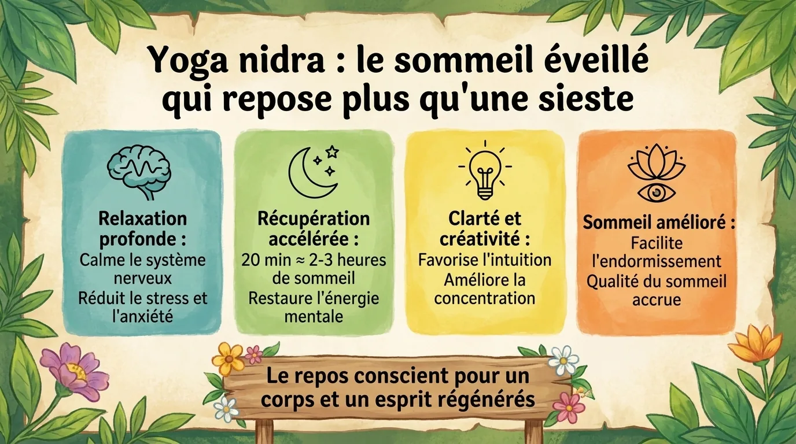
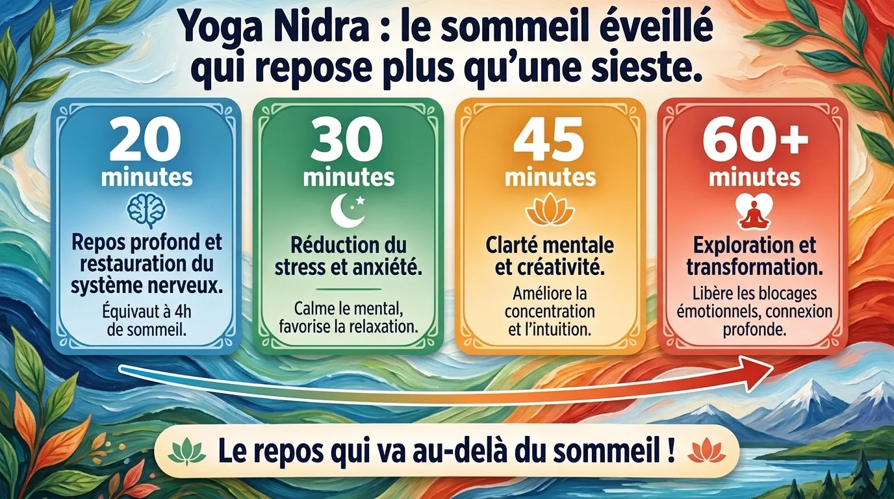

Yoga nidra : le sommeil éveillé qui repose plus qu’une sieste ?
Dormir sans dormir : le déroulé d’une séance, ce que disent les recherches sur le sommeil et le stress, le lien avec le NSDR et une séance de 10 min.
Dormir sans dormir : la promesse étrange du yoga nidra
Allongez-vous.
Ne bougez plus.
Une voix commence à guider votre attention vers :
- la main droite ;
- le pouce ;
- l’index ;
- le majeur ;
- la paume ;
- le poignet.
Puis le bras.
Puis une autre région.
Votre corps devient progressivement lourd.
Vous entendez encore la voix.
Mais quelque chose change.
Vous n’êtes pas exactement endormi.
Vous n’êtes plus non plus dans votre état d’éveil habituel.
Bienvenue dans le yoga nidra, littéralement associé à l’idée de « sommeil yogique ».
Cette pratique est devenue extrêmement populaire dans les applications de méditation et les programmes de relaxation parce qu’elle promet une chose que notre époque adore :
se reposer profondément sans forcément dormir.
Le yoga nidra est parfois présenté sur Internet comme :
« 30 minutes de yoga nidra équivalent à quatre heures de sommeil. »
Cette affirmation spectaculaire circule partout.
Elle n’est pas soutenue par des données solides permettant d’établir une équivalence universelle entre quelques dizaines de minutes de pratique et plusieurs heures de sommeil physiologique.
Le sommeil possède des fonctions biologiques spécifiques qu’une relaxation guidée ne remplace pas simplement minute pour minute.
Mais cela ne signifie pas que le repos profond sans sommeil soit inutile.
Au contraire.
Les recherches récentes sur le yoga nidra deviennent suffisamment intéressantes pour que la pratique mérite beaucoup mieux qu’un slogan exagéré.
Comment se déroule une vraie séance de yoga nidra ?
Il existe plusieurs écoles, mais le protocole moderne le plus influent en Occident est souvent associé à Swami Satyananda Saraswati, fondateur de la Bihar School of Yoga.
La pratique suit généralement plusieurs étapes.
Installation
Le pratiquant s’allonge, souvent en shavasana.
Le corps doit être suffisamment confortable pour ne plus nécessiter de mouvements fréquents.
Sankalpa
Le sankalpa est une intention ou résolution courte.
Par exemple :
« Je reste calme face aux difficultés. »
Ou :
« Je prends soin de mon énergie. »
Elle est formulée brièvement et répétée mentalement.
Rotation de la conscience
C’est probablement la signature la plus reconnaissable du yoga nidra.
L’attention passe rapidement d’une zone corporelle à une autre.
Main.
Bras.
Visage.
Jambe.
Dos.
La consigne n’est pas nécessairement de bouger.
Vous sentez mentalement la zone, puis passez à la suivante.
Respiration
L’attention peut ensuite suivre le souffle, parfois avec un compte à rebours.
Sensations opposées
Certaines méthodes introduisent des couples comme :
- lourd / léger ;
- chaud / froid ;
- confort / inconfort.
Visualisation
Des images ou scènes peuvent être proposées.
Retour au sankalpa
L’intention initiale est répétée.
Réveil progressif
L’attention revient au corps et à l’environnement.
Cette architecture explique déjà pourquoi une séance peut être particulièrement absorbante.
Pendant vingt à quarante minutes, l’esprit reçoit continuellement une tâche suffisamment simple pour ne pas devoir réfléchir, mais suffisamment structurée pour éviter de repartir complètement dans les ruminations.
Pourquoi la rotation corporelle est-elle si efficace pour calmer le bavardage mental ?
Essayez de penser simultanément à votre réunion de demain et à la sensation du bout de votre pouce droit.
Vous pouvez y parvenir.
Mais l’attention devient partagée.
Maintenant, ajoutez :
- index ;
- majeur ;
- annulaire ;
- auriculaire ;
- paume ;
- poignet.
Votre cerveau doit continuellement actualiser la cible.
La rotation de la conscience occupe donc le canal attentionnel.
Au lieu de demander :
« Arrête de penser »,
ce qui est généralement une consigne catastrophique,
le yoga nidra dit :
« Pense à ceci maintenant. Puis ceci. Puis ceci. »
Le mental possède une tâche.
Les ruminations ont moins d’espace.
C’est très proche de certaines techniques de body scan, mais avec un rythme et une structure particulièrement caractéristiques.
Le corps peut simultanément réduire son activité musculaire.
Vous vous retrouvez alors dans une situation inhabituelle :
très peu de mouvement + attention guidée + faible demande cognitive.
Le cocktail est idéal pour approcher un état de repos profond.

Yoga nidra et sommeil : que montrent réellement les recherches ?
Les données sont encourageantes mais encore modestes.
Une revue systématique publiée en 2026 a identifié six essais randomisés totalisant 244 participants et portant notamment sur l’insomnie chronique, l’insomnie aiguë et différents groupes soumis à des contraintes particulières. Plusieurs études rapportaient des améliorations de paramètres du sommeil comme la latence d’endormissement, le temps total de sommeil ou l’efficacité du sommeil. Mais les auteurs soulignent une grande hétérogénéité des protocoles, ainsi qu’un risque de biais souvent modéré à élevé.
Une autre revue systématique avec méta-analyse publiée en avril 2026 est encore plus prudente. Les analyses des essais contrôlés portant sur la qualité du sommeil et la sévérité de l’insomnie n’ont pas donné de résultats statistiquement significatifs dans certains regroupements, et les auteurs jugent la certitude globale des preuves très faible, notamment en raison des petits échantillons et de l’hétérogénéité.
La conclusion raisonnable est donc :
le yoga nidra est prometteur pour le sommeil, mais on ne peut pas encore le présenter comme un traitement de l’insomnie solidement établi au même niveau que les approches bénéficiant d’une littérature clinique beaucoup plus robuste, notamment la thérapie cognitivo-comportementale de l’insomnie.
Moins spectaculaire.
Beaucoup plus utile.
Et pour le stress et l’anxiété ?
Les données récentes sont également intéressantes.
Une revue systématique et méta-analyse publiée en 2026 a examiné les effets du yoga nidra sur le stress, l’anxiété et la dépression à partir d’un ensemble beaucoup plus large d’études, avec plus de 5 000 participants recensés dans la revue. Les auteurs trouvent des résultats favorables dans plusieurs analyses, tout en discutant les limites méthodologiques et l’hétérogénéité du corpus.
Pourquoi le yoga nidra pourrait-il aider ?
Plusieurs composantes peuvent contribuer :
- immobilité confortable ;
- attention corporelle ;
- ralentissement comportemental ;
- respiration ;
- réduction temporaire des demandes extérieures ;
- imagerie ;
- rituel répétitif.
Il est donc difficile de dire :
« Voilà LE mécanisme unique du yoga nidra. »
Probablement parce qu’il n’y en a pas qu’un.
Comme souvent avec les pratiques contemplatives, le protocole agit plutôt comme un ensemble.
Yoga nidra et NSDR : même chose ?
Le terme NSDR, pour Non-Sleep Deep Rest, est devenu très populaire ces dernières années.
Il désigne de manière générale des pratiques permettant d’atteindre un repos profond sans sommeil.
Le yoga nidra peut entrer dans cette catégorie.
Mais NSDR n’est pas une ancienne tradition yogique distincte.
C’est plutôt une étiquette moderne et fonctionnelle regroupant certaines pratiques de relaxation profonde, dont le yoga nidra.
Tous les yoga nidra sont donc potentiellement des formes de repos profond sans sommeil.
Mais tout ce qui est appelé NSDR n’est pas nécessairement du yoga nidra traditionnel.
La différence est importante, surtout pour éviter de réécrire l’histoire à coups de hashtags.
Faut-il rester éveillé pendant le yoga nidra ?
Traditionnellement, l’objectif est souvent de maintenir un certain fil de conscience.
Mais si vous vous endormez, aucune police du yoga ne viendra sonner à votre porte.
Si votre objectif est simplement de dormir, s’endormir pendant la séance peut même être parfaitement acceptable.
En revanche, si vous souhaitez explorer le yoga nidra comme pratique de conscience, essayez de conserver une petite partie de l’attention sur la voix.
Quelques astuces :
- pratiquez plus tôt dans la journée ;
- gardez une couverture légère mais pas trop chaude ;
- pliez légèrement un bras pour éviter de sombrer immédiatement ;
- pratiquez sur un tapis plutôt que dans votre lit.
L’idée n’est pas de lutter contre le sommeil.
Seulement de rester sur sa frontière.
Cet état proche de l’hypnagogie, où les images et sensations commencent à changer alors que la conscience persiste encore, peut devenir l’un des aspects les plus intéressants de la pratique.

Une séance express de dix minutes
Allongez-vous.
Minute 1 : installation.
Sentez le poids du corps.
Choisissez une intention très courte.
Minutes 2–4 : rotation corporelle.
Main droite.
Bras.
Épaule.
Main gauche.
Bras gauche.
Visage.
Poitrine.
Ventre.
Bassin.
Jambe droite.
Jambe gauche.
Minutes 5–6 : respiration.
Comptez dix expirations à rebours.
- 10.
- 9.
- 8.
Si vous perdez le compte, revenez simplement à 10.
Minutes 7–8 : sensations opposées.
Imaginez le corps lourd.
Puis léger.
Chaud.
Puis frais.
Minute 9 : silence.
Ne faites rien.
Écoutez seulement.
Minute 10 : retour.
Répétez votre sankalpa.
Sentez les mains.
Les pieds.
L’environnement.
Puis terminez tranquillement.
Dix minutes ne remplacent évidemment pas une nuit.
Mais dix minutes pendant lesquelles vous ne répondez à personne, ne scrollez rien et ne résolvez aucun problème représentent déjà une forme de luxe neurologique assez sérieuse.
Yoga nidra ou sieste : lequel choisir ?
Une sieste implique du sommeil réel si vous vous endormez.
Le yoga nidra peut rester entièrement éveillé.
Ce ne sont donc pas des équivalents.
Choisissez plutôt selon votre besoin.
Vous avez dormi cinq heures et vous êtes épuisé ?
Votre corps a probablement davantage besoin de sommeil que d’une philosophie du repos.
Vous êtes mentalement saturé mais ne souhaitez pas dormir ?
Un yoga nidra peut être idéal.
Vous avez une demi-heure disponible et risquez de vous réveiller groggy après une sieste ?
Un repos guidé peut être une alternative intéressante.
Le meilleur outil dépend du problème.
Et contrairement aux slogans de bien-être, la physiologie adore les nuances.
Questions fréquentes
Le yoga nidra équivaut-il à plusieurs heures de sommeil ?
Aucune preuve solide ne permet d’établir une équivalence fixe du type « 30 minutes = 4 heures de sommeil ». Le yoga nidra peut favoriser un repos profond, mais il ne remplace pas les fonctions biologiques du sommeil.
Le yoga nidra peut-il améliorer l’insomnie ?
Les recherches sont prometteuses mais encore limitées. Des revues récentes rapportent des améliorations dans certaines études, tandis qu’une méta-analyse de 2026 juge la certitude globale des preuves très faible.
Est-ce grave de s’endormir pendant une séance ?
Non. Si votre objectif est la relaxation ou l’endormissement, cela peut même être souhaitable. Pour un travail de conscience plus spécifique, essayez simplement de pratiquer à un horaire où vous êtes moins fatigué.
Quelle différence entre yoga nidra et NSDR ?
Le yoga nidra est une pratique structurée issue du yoga moderne et de traditions contemplatives indiennes. NSDR est une appellation contemporaine plus large désignant différentes méthodes de repos profond sans sommeil.
Envie de pratiquer plutôt que de lire ?
Tout ce que décrit cet article se pratique dans MeditaDream, application de méditation gratuite : 129 méditations guidées et 17 mondes immersifs en français, sans abonnement, sans publicité, sans compte, et tout fonctionne hors ligne.
✦ Découvrir l'application gratuite